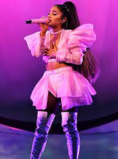
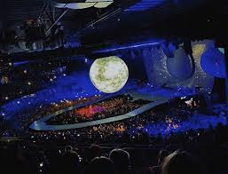
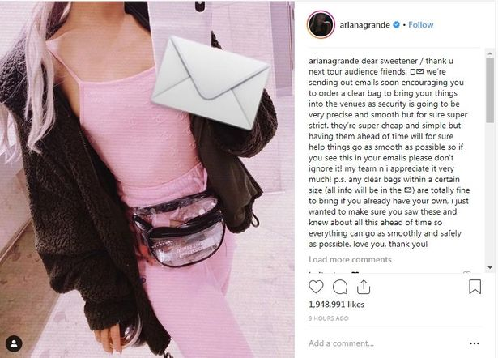
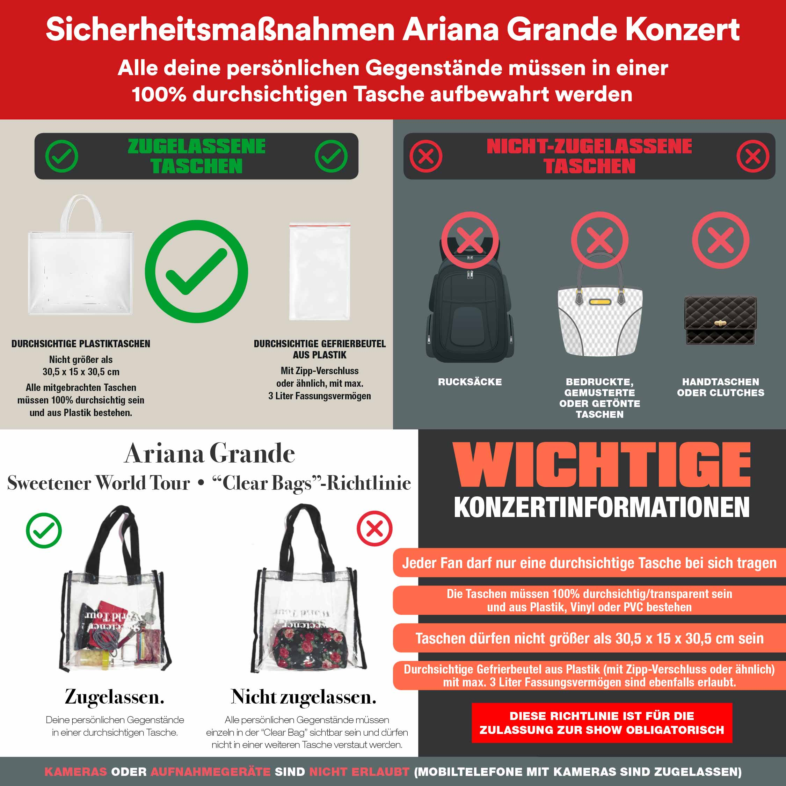
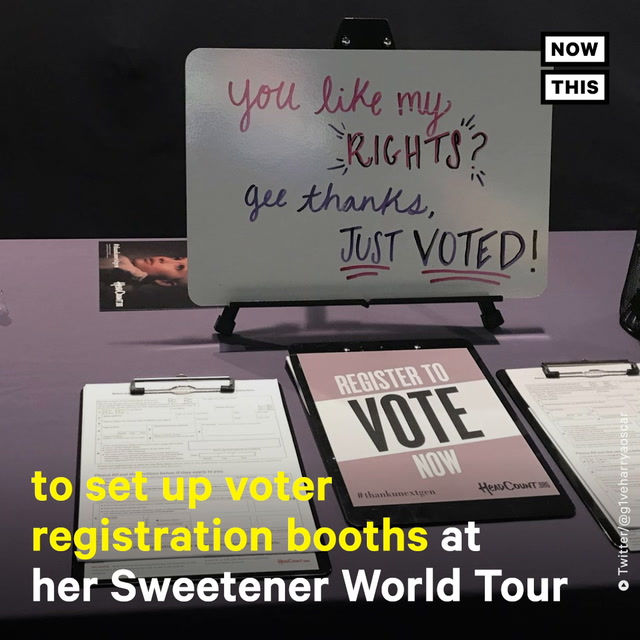

About the Sweetner World Tour
The Tour was announced October 25th 2018 and started on March 18th 2019. This tour is for Grande's 2 new albums Sweetener and Thank u, Next which were released less than 6 months apart. Songs from both albums will be performed as well as songs from her previous albums such as Dangerous Woman, Honeymoon Avenue, and Yours Truley.
Most thought that another Ariana Grande tour would never happen again because of the Manchester attack that occured at her Dangerous Woamn tour in 2017. It was there that 22 attending the show were killed during a suicide bombing. After taking much needed time to work through all the trauma she has indured from the Manchester attack and losing her ex-boyfriend Mac Miller Ariana is back and ready to share her healing through music.
Due to the events of the Manchester attack there will now be heavy security and safety precautions being taken to ensure fans, Ariana Grande and her team during each performance. Any bag that is not clear will not be permitted into any performing area and this includes small purses and clutches.
Fans are encouraged to either order a clear Sweetener bag or bring a clear bag they already own. This will make going through security much easier since it is much like going through Airport security. This is to ensure the safety of all fans attending any Sweetener Show.
Another thing fans should know before coming to any perfromance is that there will be a booth designated from people to register to vote for the United States 2020 election. Anyone wanting to register is free to come check out the booth and register!